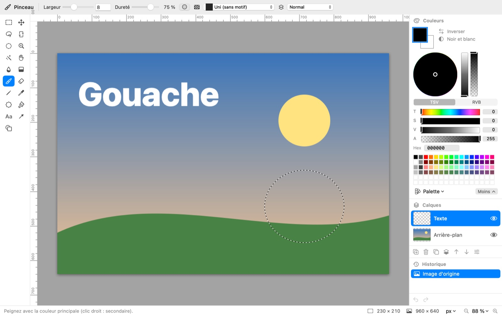
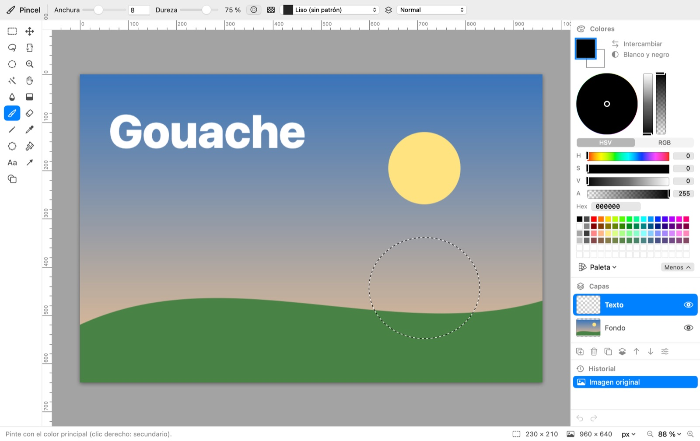
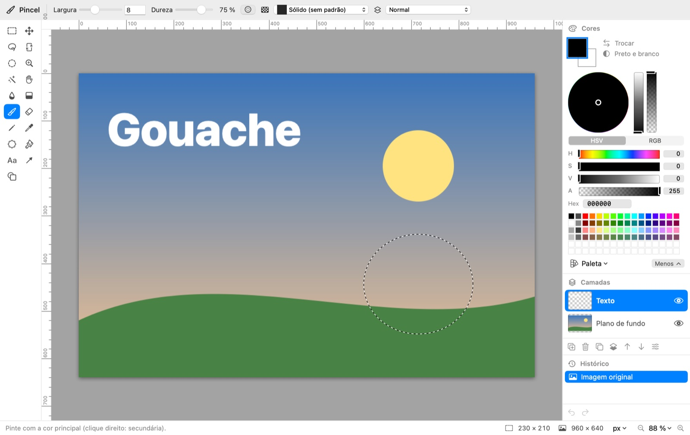
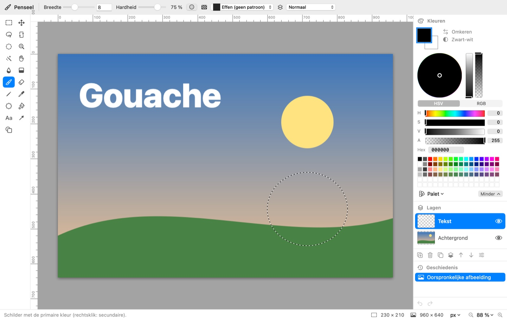
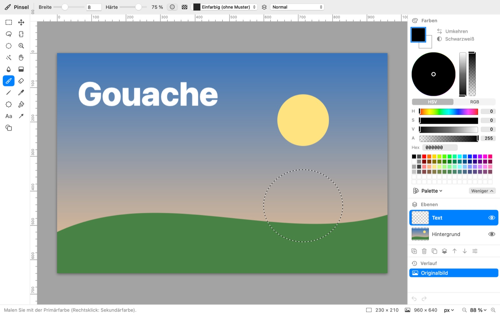
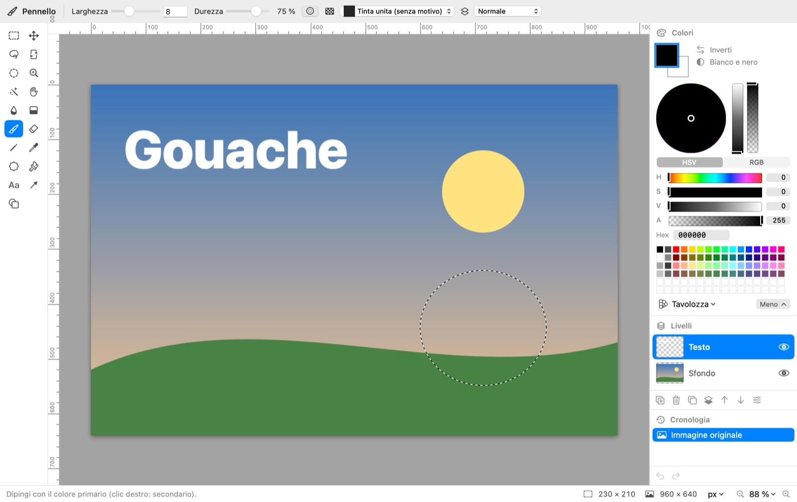

Gouache
Un éditeur d'images complet pour Mac, simple comme un logiciel de dessin : calques, effets, outils de dessin, en 7 langues.
A complete image editor for Mac, as easy as a drawing program: layers, effects, drawing tools, in 7 languages.
Un editor de imágenes completo para Mac, tan sencillo como un programa de dibujo: capas, efectos, herramientas de dibujo, en 7 idiomas.
Um editor de imagens completo para Mac, simples como um programa de desenho: camadas, efeitos, ferramentas de desenho, em 7 idiomas.
Een complete beeldbewerker voor de Mac, zo eenvoudig als een tekenprogramma: lagen, effecten, tekengereedschap, in 7 talen.
Ein vollständiger Bildeditor für den Mac, so einfach wie ein Malprogramm: Ebenen, Effekte, Zeichenwerkzeuge, in 7 Sprachen.
Un editor di immagini completo per Mac, semplice come un programma di disegno: livelli, effetti, strumenti di disegno, in 7 lingue.
Gratuit. macOS 14 Sonoma ou plus récent, Mac Apple Silicon (M1 ou plus récent).
Free. macOS 14 Sonoma or later, Apple Silicon Mac (M1 or later).
Gratis. macOS 14 Sonoma o posterior, Mac con Apple Silicon (M1 o posterior).
Grátis. macOS 14 Sonoma ou posterior, Mac com Apple Silicon (M1 ou posterior).
Gratis. macOS 14 Sonoma of nieuwer, Mac met Apple Silicon (M1 of nieuwer).
Kostenlos. macOS 14 Sonoma oder neuer, Mac mit Apple Silicon (M1 oder neuer).
Gratis. macOS 14 Sonoma o versioni successive, Mac con Apple Silicon (M1 o successivo).






Tout pour retoucher et dessiner
Everything you need to edit and draw
Todo para retocar y dibujar
Tudo para retocar e desenhar
Alles om te bewerken en te tekenen
Alles zum Bearbeiten und Zeichnen
Tutto per ritoccare e disegnare
Ouvrez une photo, ajoutez des calques, peignez, découpez, appliquez un effet : tout est à un clic, avec des menus clairs et une boîte à outils toujours visible. Et si vous vous trompez, l'historique vous ramène en arrière.
Open a photo, add layers, paint, cut out, apply an effect: everything is one click away, with clear menus and a toolbox that is always in view. And if you make a mistake, the history takes you back.
Abra una foto, añada capas, pinte, recorte, aplique un efecto: todo está a un clic, con menús claros y una caja de herramientas siempre a la vista. Y si se equivoca, el historial le lleva hacia atrás.
Abra uma foto, adicione camadas, pinte, recorte, aplique um efeito: tudo está a um clique, com menus claros e uma caixa de ferramentas sempre à vista. E se você errar, o histórico leva você de volta.
Open een foto, voeg lagen toe, schilder, knip uit, pas een effect toe: alles zit één klik verderop, met duidelijke menu's en een gereedschapskist die altijd in beeld blijft. En als u zich vergist, brengt de geschiedenis u terug.
Öffnen Sie ein Foto, fügen Sie Ebenen hinzu, malen Sie, schneiden Sie frei, wenden Sie einen Effekt an: Alles ist nur einen Klick entfernt, mit klaren Menüs und einem Werkzeugkasten, der immer sichtbar bleibt. Und wenn Sie sich vertun, bringt Sie der Verlauf zurück.
Apri una foto, aggiungi livelli, dipingi, ritaglia, applica un effetto: tutto è a portata di clic, con menu chiari e una cassetta degli attrezzi sempre in vista. E se sbagli, la cronologia ti riporta indietro.
Outils de dessin
Drawing tools
Herramientas de dibujo
Ferramentas de desenho
Tekengereedschap
Zeichenwerkzeuge
Strumenti di disegno
Pinceau avec dureté et pression de la tablette, crayon, gomme, tampon de duplication, recolorer, pot de peinture, texte, lignes et courbes de Bézier, et une quarantaine de formes modifiables. Dégradés linéaire, réfléchi, losange, radial, conique et spirale.
Brush with hardness and tablet pressure, pencil, eraser, clone stamp, recolour, paint bucket, text, lines and Bézier curves, and about forty editable shapes. Linear, reflected, diamond, radial, conical and spiral gradients.
Pincel con dureza y presión de la tableta, lápiz, goma, tampón de clonar, recolorear, bote de pintura, texto, líneas y curvas de Bézier, y unas cuarenta formas editables. Degradados lineal, reflejado, rombo, radial, cónico y espiral.
Pincel com dureza e pressão da mesa digitalizadora, lápis, borracha, carimbo de clonagem, recolorir, balde de tinta, texto, linhas e curvas de Bézier, e cerca de quarenta formas editáveis. Degradês linear, refletido, losango, radial, cônico e espiral.
Penseel met hardheid en drukgevoeligheid van de tekentablet, potlood, gum, kloonstempel, herkleuren, verfemmer, tekst, lijnen en Bézier-curven, en zo'n veertig aanpasbare vormen. Verlopen: lineair, gespiegeld, ruit, radiaal, conisch en spiraal.
Pinsel mit Härte und Tablet-Druck, Stift, Radiergummi, Kopierstempel, Umfärben, Farbeimer, Text, Linien und Bézierkurven sowie rund vierzig bearbeitbare Formen. Verläufe: linear, gespiegelt, Raute, radial, konisch und spiralförmig.
Pennello con durezza e pressione della tavoletta, matita, gomma, timbro clone, ricolora, secchiello, testo, linee e curve di Bézier, e una quarantina di forme modificabili. Sfumature lineare, riflessa, a rombo, radiale, conica e a spirale.
Sélections
Selections
Selecciones
Seleções
Selecties
Auswahlen
Selezioni
Rectangle, ellipse, lasso et baguette magique. Ajoutez, retirez ou gardez l'intersection, puis déplacez, agrandissez ou tournez les pixels sélectionnés.
Rectangle, ellipse, lasso and magic wand. Add, subtract or intersect, then move, scale or rotate the selected pixels.
Rectángulo, elipse, lazo y varita mágica. Añada, quite o quédese con la intersección, y luego mueva, amplíe o gire los píxeles seleccionados.
Retângulo, elipse, laço e varinha mágica. Adicione, subtraia ou faça a interseção, depois mova, amplie ou gire os pixels selecionados.
Rechthoek, ellips, lasso en toverstaf. Voeg toe, haal weg of houd alleen de overlap, en verplaats, vergroot of draai daarna de geselecteerde pixels.
Rechteck, Ellipse, Lasso und Zauberstab. Hinzufügen, abziehen oder Schnittmenge bilden, dann die ausgewählten Pixel verschieben, vergrößern oder drehen.
Rettangolo, ellisse, lazo e bacchetta magica. Aggiungi, togli o tieni l'intersezione, poi sposta, ingrandisci o ruota i pixel selezionati.
Calques
Layers
Capas
Camadas
Lagen
Ebenen
Livelli
Empilez autant de calques que vous voulez, avec modes de fusion et opacité. Fusionnez-les, ou importez une image comme nouveau calque.
Stack as many layers as you like, with blend modes and opacity. Merge them, or import a picture as a new layer.
Apile tantas capas como quiera, con modos de fusión y opacidad. Combínelas o importe una imagen como capa nueva.
Empilhe quantas camadas quiser, com modos de mesclagem e opacidade. Mescle-as ou importe uma imagem como nova camada.
Stapel zoveel lagen als u wilt, met overvloeimodi en dekking. Voeg ze samen, of importeer een afbeelding als nieuwe laag.
Stapeln Sie beliebig viele Ebenen, mit Füllmethoden und Deckkraft. Fügen Sie sie zusammen oder importieren Sie ein Bild als neue Ebene.
Sovrapponi tutti i livelli che vuoi, con metodi di fusione e opacità. Uniscili, oppure importa un'immagine come nuovo livello.
Historique
History
Historial
Histórico
Geschiedenis
Verlauf
Cronologia
Chaque action est notée dans l'historique : cliquez sur une étape pour y revenir aussitôt.
Every action is listed in the history: click a step to go straight back to it.
Cada acción queda en el historial: haga clic en un paso para volver a él al instante.
Cada ação fica registrada no histórico: clique em uma etapa para voltar a ela na hora.
Elke handeling staat in de geschiedenis: klik op een stap om er meteen naar terug te gaan.
Jede Aktion steht im Verlauf: Klicken Sie auf einen Schritt, um sofort dorthin zurückzukehren.
Ogni azione resta nella cronologia: fai clic su un passaggio per tornarci subito.
Réglages
Adjustments
Ajustes
Ajustes
Aanpassingen
Korrekturen
Regolazioni
Luminosité et contraste, courbes, niveaux, teinte et saturation, noir et blanc, sépia, postériser, niveau automatique, et bien d'autres.
Brightness and contrast, curves, levels, hue and saturation, black and white, sepia, posterize, auto-level and many more.
Brillo y contraste, curvas, niveles, tono y saturación, blanco y negro, sepia, posterizar, nivel automático y muchos más.
Brilho e contraste, curvas, níveis, matiz e saturação, preto e branco, sépia, posterizar, nível automático e muitos outros.
Helderheid en contrast, curven, niveaus, tint en verzadiging, zwart-wit, sepia, posteriseren, automatische niveaus en nog veel meer.
Helligkeit und Kontrast, Gradationskurven, Tonwerte, Farbton und Sättigung, Schwarzweiß, Sepia, Tontrennung, automatische Tonwertkorrektur und vieles mehr.
Luminosità e contrasto, curve, livelli, tonalità e saturazione, bianco e nero, seppia, posterizza, livelli automatici e molto altro.
Effets
Effects
Efectos
Efeitos
Effecten
Effekte
Effetti
50 effets : flous, déformations, bruit, photo, rendu de nuages et de fractales, effets artistiques, ombre portée et contour pour les objets, tramage des couleurs.
50 effects: blurs, distortions, noise, photo, cloud and fractal rendering, artistic effects, drop shadow and outline for objects, colour dithering.
50 efectos: desenfoques, deformaciones, ruido, foto, nubes y fractales, efectos artísticos, sombra paralela y contorno para objetos, tramado de color.
50 efeitos: desfoques, distorções, ruído, foto, renderização de nuvens e fractais, efeitos artísticos, sombra projetada e contorno para objetos, pontilhamento de cores.
50 effecten: vervagen, vervormen, ruis, foto, wolken en fractals, artistieke effecten, slagschaduw en omlijning voor objecten, kleurdithering.
50 Effekte: Weichzeichner, Verzerrungen, Rauschen, Foto, Wolken und Fraktale, künstlerische Effekte, Schlagschatten und Kontur für Objekte, Farb-Dithering.
50 effetti: sfocature, distorsioni, rumore, foto, nuvole e frattali, effetti artistici, ombra esterna e contorno per gli oggetti, retinatura dei colori.
Fichiers
Files
Archivos
Arquivos
Bestanden
Dateien
File
Plusieurs images ouvertes à la fois, en onglets. PNG, JPEG, HEIC, AVIF, TIFF, BMP, GIF, TGA, ICO… et le WebP en lecture. Le format .gouache garde vos calques pour reprendre plus tard.
Several pictures open at once, in tabs. PNG, JPEG, HEIC, AVIF, TIFF, BMP, GIF, TGA, ICO… and WebP for reading. The .gouache format keeps your layers so you can pick up later.
Varias imágenes abiertas a la vez, en pestañas. PNG, JPEG, HEIC, AVIF, TIFF, BMP, GIF, TGA, ICO… y WebP en lectura. El formato .gouache conserva sus capas para seguir más tarde.
Várias imagens abertas ao mesmo tempo, em abas. PNG, JPEG, HEIC, AVIF, TIFF, BMP, GIF, TGA, ICO… e WebP para leitura. O formato .gouache guarda as suas camadas para você continuar depois.
Meerdere afbeeldingen tegelijk open, in tabbladen. PNG, JPEG, HEIC, AVIF, TIFF, BMP, GIF, TGA, ICO… en WebP om te openen. Het .gouache-formaat bewaart uw lagen, zodat u later verder kunt.
Mehrere Bilder gleichzeitig geöffnet, in Tabs. PNG, JPEG, HEIC, AVIF, TIFF, BMP, GIF, TGA, ICO … und WebP zum Öffnen. Das Format .gouache behält Ihre Ebenen, damit Sie später weitermachen können.
Più immagini aperte insieme, in schede. PNG, JPEG, HEIC, AVIF, TIFF, BMP, GIF, TGA, ICO… e WebP in lettura. Il formato .gouache conserva i livelli per riprendere più tardi.
Fait pour le Mac
Made for the Mac
Hecho para el Mac
Feito para o Mac
Gemaakt voor de Mac
Für den Mac gemacht
Fatto per il Mac
Les raccourcis ⌘ habituels, le trackpad (pincez pour zoomer), le mode sombre et les mises à jour automatiques.
The usual ⌘ shortcuts, the trackpad (pinch to zoom), dark mode and automatic updates.
Los atajos ⌘ de siempre, el trackpad (pellizque para hacer zoom), el modo oscuro y las actualizaciones automáticas.
Os atalhos ⌘ de sempre, o trackpad (faça movimento de pinça para dar zoom), o modo escuro e as atualizações automáticas.
De vertrouwde ⌘-sneltoetsen, het trackpad (knijp om te zoomen), de donkere modus en automatische updates.
Die gewohnten ⌘-Kurzbefehle, das Trackpad (zum Zoomen auf- und zuziehen), der dunkle Modus und automatische Updates.
Le solite abbreviazioni ⌘, il trackpad (pizzica per lo zoom), la modalità scura e gli aggiornamenti automatici.
Gratuit et sans pub
Free and ad-free
Gratis y sin anuncios
Grátis e sem anúncios
Gratis en zonder reclame
Kostenlos und werbefrei
Gratis e senza pubblicità
Pas d'abonnement, pas de compte, pas de publicité. Gouache ne collecte aucune donnée et fonctionne sans internet.
No subscription, no account, no ads. Gouache collects no data and works offline.
Sin suscripción, sin cuenta, sin publicidad. Gouache no recopila ningún dato y funciona sin internet.
Sem assinatura, sem conta, sem anúncios. O Gouache não coleta nenhum dado e funciona sem internet.
Geen abonnement, geen account, geen reclame. Gouache verzamelt geen gegevens en werkt zonder internet.
Kein Abo, kein Konto, keine Werbung. Gouache sammelt keine Daten und funktioniert ohne Internet.
Nessun abbonamento, nessun account, nessuna pubblicità. Gouache non raccoglie alcun dato e funziona senza internet.